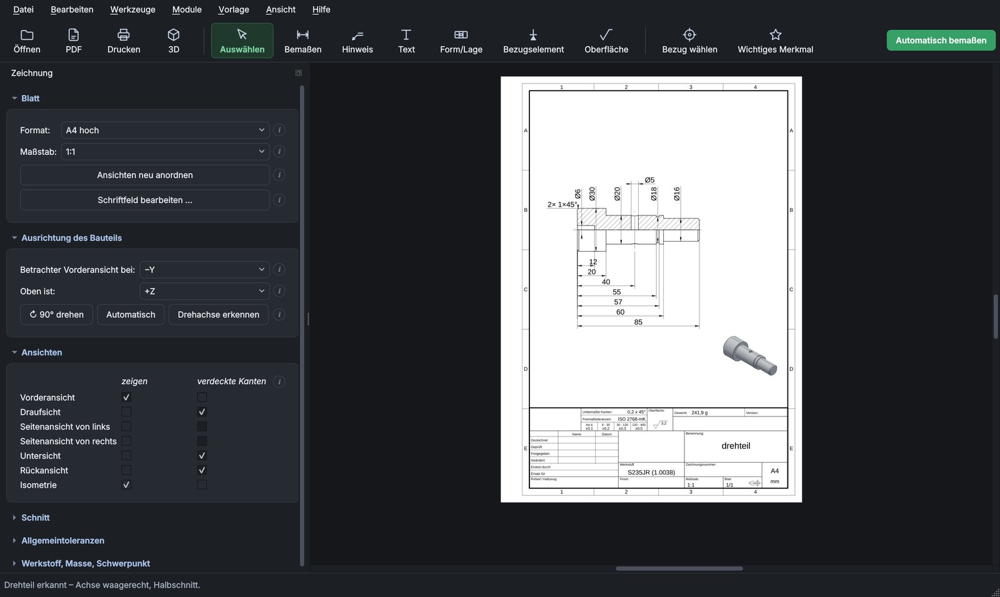
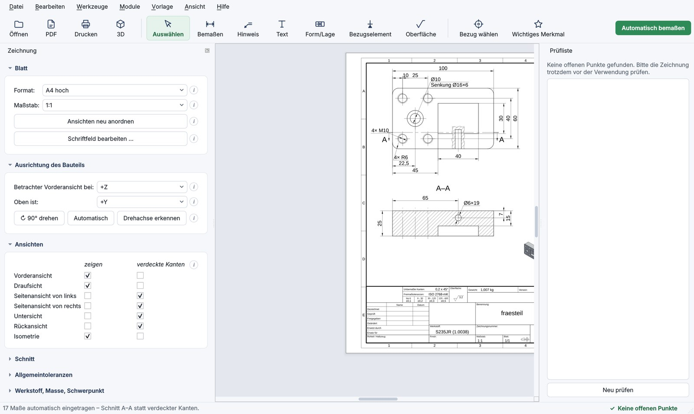
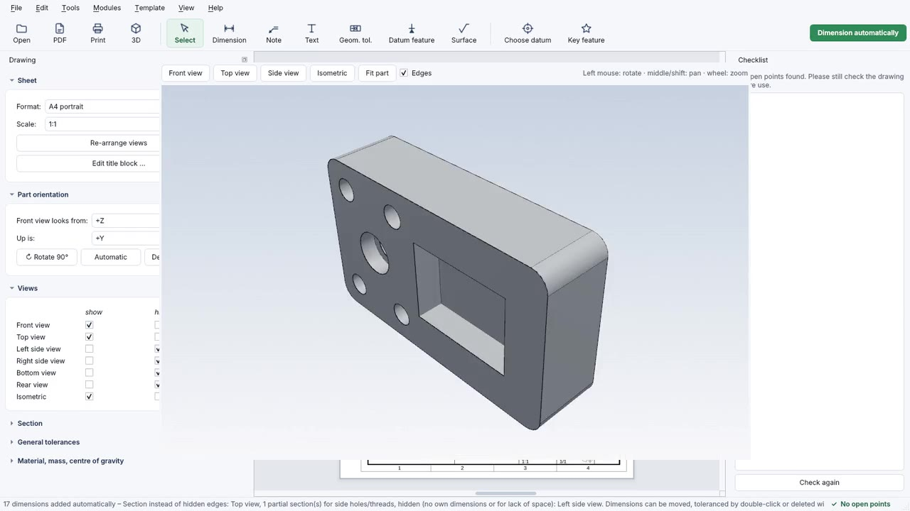
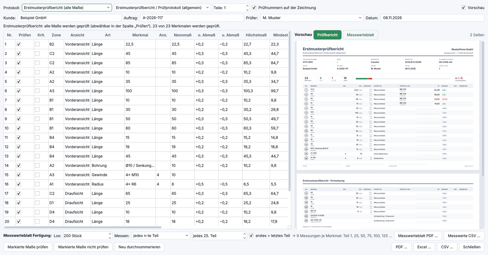
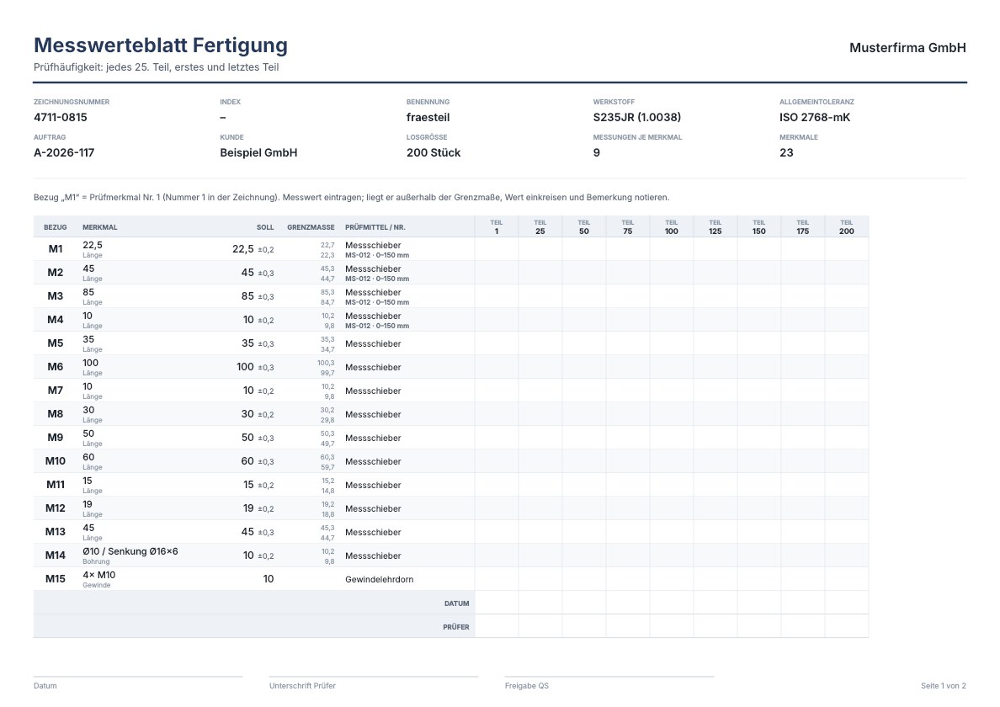
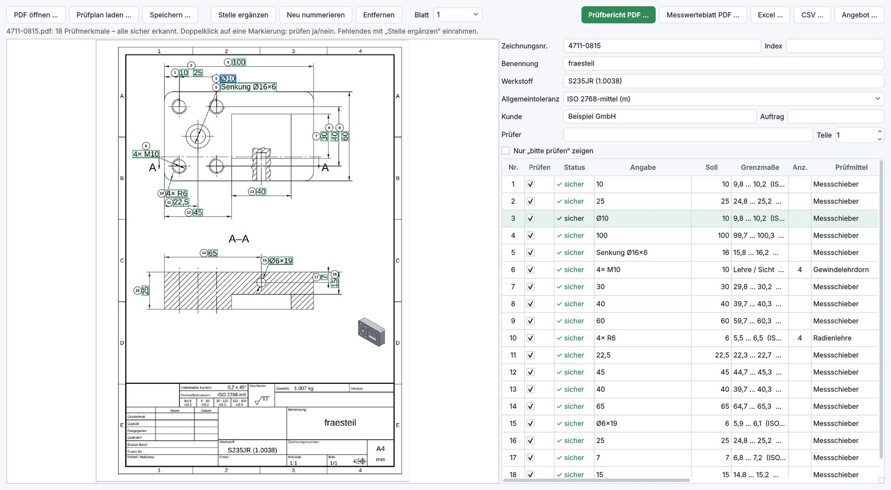
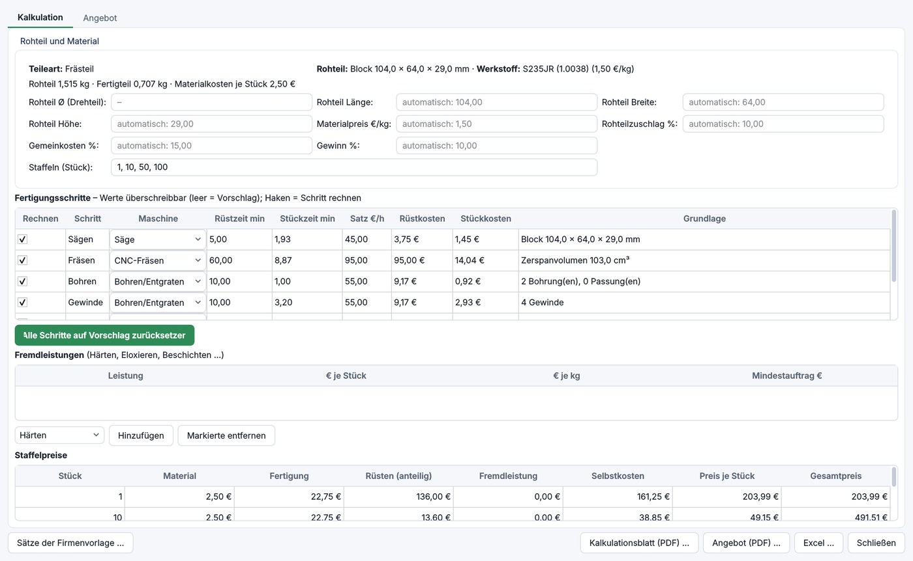

StepDraw CAD turns your 3D model into a standard-compliant workshop drawing automatically – with dimensions, sections, detail views, threads and your title block. In minutes instead of hours.
Try the beta free Pricing
No CAD system required – StepDraw CAD reads the 3D model directly.
Load a 3D model from any CAD system (STEP/STP). Orientation and views are chosen automatically.
One click: positions, diameters, threads, radii, sections and detail views according to ISO 129-1 and ISO 128-3.
Adjust if needed, then export to PDF, DXF or print – with your company title block.
The most important additions of recent versions – all based on feedback from the shop floor.
Drop a customer drawing (PDF) in: dimensions, tolerances, fits and threads are recognised and numbered. Uncertain spots are marked yellow – add missing ones by drawing a frame.
Even without a 3D model: the part envelope is suggested from the drawing, holes, threads and tight tolerances are counted – then on to quotation costing.
Columns created automatically from lot size and inspection frequency, references M1, M2 … to the drawing, gauge and gauge number, date and inspector per measurement.
Clear and calm, light or dark. An assistant guides you through orientation, datums and key features; the checklist shows open points and jumps to them.
A dimension stays exactly where you drag it. Optionally, the standards assist moves it to a free, compliant spot; nudge with the arrow keys.
Dimensions and title block are real text in the PDF – searchable with Ctrl+F, copyable and readable by inspection and document software. Files get much smaller.
Your work is saved quietly every few minutes. After a crash the program offers to restore it at the next start.
Line group per ISO 128-2 chosen to suit the sheet: A4/A3 0.25 mm, A2/A1 0.35 mm, A0 0.5 mm.
Click a reference edge, hole or shoulder – key features are dimensioned directly from the datum; datums can be shown or hidden.
Everything important at a glance – and nothing that distracts.

Screenshots show the German interface; English is available in the program.

Left: the STEP model. Right: the automatically created drawing.

Open a STEP file, dimension automatically, check the 3D model – then create the inspection plan and the finished quotation from the PDF drawing. With subtitles.

One click (F3) opens the model in its own 3D window – to check it before you release the drawing.
Everything a manufacturing drawing needs.
ISO 129-1, adapted to each part: individual dimensions or ordinate dimensioning for many positions.
Full, half and partial sections are chosen automatically (ISO 128-3).
Crowded areas are shown enlarged and dimensioned there – on a second sheet if needed.
“4× M6”, “Ø10 / counterbore Ø16×6” per ISO 15786 and ISO 6410.
Company, logo, people, material with density, mass and centre of gravity, general tolerance ISO 2768.
True to scale on A4 to A0, line widths per ISO 128-2, multiple sheets, print preview, 3D view of the part.
Your models and drawings never leave your computer.
ISO 286 fits, geometric tolerances, surface texture symbols.
See open points before release, set datums and key features deliberately.
Text in the PDF stays text – search, copy, process. Switchable in the company template.
Regular updates – the program notifies you of new versions. Your work is saved automatically.
The beta has no fixed end date. Details in the terms, sections 2.6 and 2.7 (German).
One licence per computer. Prices excl. VAT; VAT is added at checkout according to your country.
🎉 Beta founder price −25 % for the first 20 customers: 20 of 20 left
The discount is applied automatically at checkout.
Free version: free forever for testing – all features, output with watermark, no DXF export.
Companies can also buy on invoice: support@stepdraw.de
Available with the full version – own licence key, activated in the program under Modules → Activate add-on. Greyed out in the free version.

The finished drawing becomes an inspection plan at a click: every dimension gets a number (balloon), the inspection record fills itself in – with a live preview while you edit.

For running series: enter lot size and inspection frequency – the columns are created for you.

For drawings that do not come from StepDraw – from a customer, for example. No 3D model needed.

From a 3D model – or from a PDF drawing – to a quotation in minutes: raw part, operations and times are derived from the part, you check and adjust.
Both modules with one licence key – cheaper than separately.
Beta prices – add-on prices will rise with version 1.0. Buy now and keep your price and the full feature set.
Yes. The add-on modules extend a full version (subscription or purchase). In the free version they are greyed out. With a full version but without the module you get a preview (PDF with watermark, no Excel export).
After purchase you receive a separate licence key by e-mail. Enter it in the program under Modules → Activate add-on … – done. One key is valid for one computer; to move, deactivate the module there and enter it on the new computer.
Yes, monthly and yearly subscriptions can be cancelled at the end of the term. The module is then locked again; your drawings and projects are kept.
Windows 10/11 (64-bit). The beta version is fully functional; output carries a watermark. Send us your notes directly from the program via Help → Report a problem / feedback. The program interface is available in English and German (Help → Language).
About the Windows message: On first start Windows may show “Windows protected your PC”. This appears for new programs that Windows has not seen often yet – it does not mean that anything is wrong.
Only download StepDraw CAD from this website.
StepDraw CAD is ready to use but still under active development – especially the automatic dimensioning. Anyone can test the program free of charge. If you want a licence now, buy early at the founder price (−25 %) and get version 1.0 at no extra cost. Until then features may still change, and not every drawing is complete without rework. There is no fixed end date – the beta ends with version 1.0.
Send us useful feedback during the beta – a bug, a missing dimension, a suggestion – via Help → Report a problem / feedback or to support@stepdraw.de. You will receive a personal code by e-mail for 25 % off your next renewal or a later subscription. The code cannot be combined with the founder price.
This message (Microsoft Defender SmartScreen) appears for new programs that Windows has rarely seen. Click “More info” and then “Run anyway”. Only download the program from stepdraw.de.
StepDraw CAD does most of the work for you and improves with every update. Like any automation, it cannot solve every special case perfectly (e.g. inaccurate models or special manufacturing requirements). Please check every drawing before using it for production and complete it where necessary – responsibility for the drawing remains with the designer.
No. Models and drawings stay on your computer. For subscriptions, only the licence key is briefly confirmed online about once a week.
No. StepDraw CAD reads STEP files (AP203/AP214/AP242) from any CAD system directly.
One licence per computer. To switch (e.g. office → laptop), deactivate the licence under Help → Licence and enter it on the other computer. If a computer is broken, contact us and we will release the licence.
Any time via the “Manage subscription” link in your purchase confirmation or by e-mail to support@stepdraw.de. StepDraw CAD then continues as the free version; your projects are kept.
Thank you! In the program, use Help → Report a problem / feedback to send us a description, optionally with the drawing as PDF. Or write to support@stepdraw.de. Fixes are delivered by update.
Yes, with the inspection plan add-on: Modules → Inspection plan from PDF drawing. StepDraw CAD reads dimensions and notes from PDFs created by a CAD system, numbers them and creates the record and measurement sheet. Uncertain spots are marked and can be corrected. With the quotation costing add-on you can also create a quotation from it. The drawing stays on your computer.
Scanned PDFs contain no readable text. You can still capture the characteristics: frame the spot on the drawing and enter the value. Automatic text recognition for scans is planned.
Yes. Dimensions and title block are real text in the PDF – searchable with Ctrl+F and copyable. If you prefer not to, switch it off in the company template (then outlines as before).
Automatically via the Microsoft Store. The download version notifies you of new versions at start-up – one click is enough.